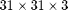
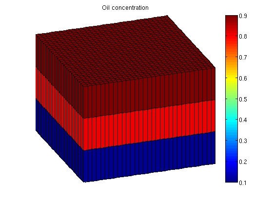
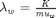
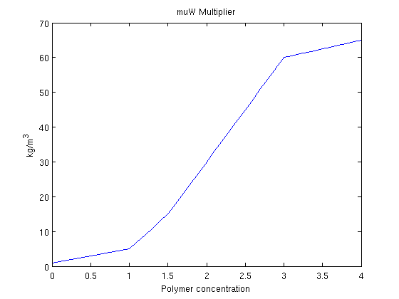
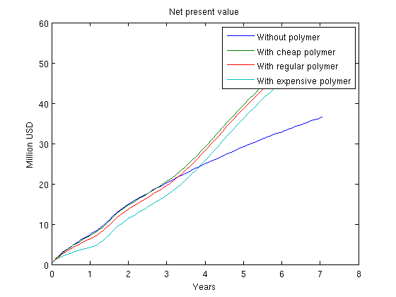
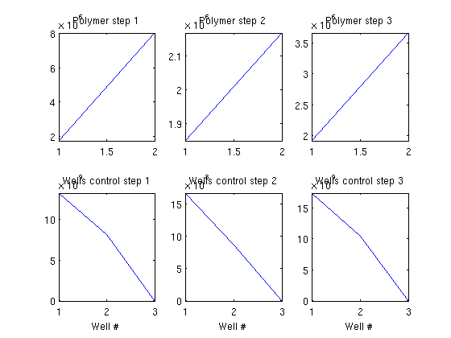
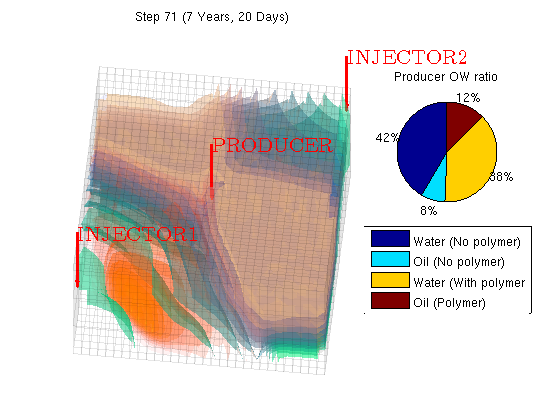
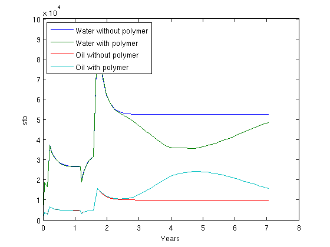

Contents
Read case from file
This example contains a simple  fine grid containing two injectors in opposite corners and one producer in the middle of the domain. All wells are completed in the top layers of cells.
The schedule being used contains first a period of injection with polymer, followed by a water flooding phase without polymer. Finally, the water rate is reduced for the final time steps.
mrstModule add deckformat gridtools current_dir = fileparts(mfilename('fullpath')); fn = fullfile(current_dir, 'polymer.data'); deck = readEclipseDeck(fn); deck = convertDeckUnits(deck); G = initEclipseGrid(deck); G = computeGeometry(G); rock = initEclipseRock(deck); rock = compressRock(rock, G.cells.indexMap); fluid = initDeckADIFluid(deck); gravity on
Set up simulation parameters
We want a layer of oil on top of the reservoir and water on the bottom. To do this, we alter the initial state based on the logical height of each cell. The resulting oil concentration is then plotted.
ijk = gridLogicalIndices(G);
state0 = initResSol(G, 300*barsa, [ .9, .1]);
state0.s(ijk{3} == 1, 2) = .9;
state0.s(ijk{3} == 2, 2) = .8;
% Enforce s_w + s_o = 1;
state0.s(:,1) = 1 - state0.s(:,2);
% Add zero polymer concentration to the state.
state0.c = zeros(G.cells.num, 1);
state0.cmax = zeros(G.cells.num, 1);
s = setupSimComp(G, rock, 'deck', deck);
clf
plotCellData(G, state0.s(:,2));
plotGrid(G, 'facec', 'none')
title('Oil concentration')
axis tight off
view(70, 30);
colorbar;
 Plot polymer properties
When polymer is added to the water phase, the viscosity of the water phase containing polymer is increased. Because mobility is defined as , this makes the water much less mobile. As a problem with water injection with regards to oil production is that the water is much more mobile than the hydrocarbons we are trying to displace, injecting a polymer may be beneficial towards oil recovery.
dc = 0:.1:fluid.cmax; plot(dc, fluid.muWMult(dc)) title('muW Multiplier') xlabel('Polymer concentration') ylabel('kg/m^3')
Set up systems.
To quantify the effect of adding the polymer to the injected water, we will solve the same system both with and without polymer. This is done by creating both a Oil/Water/Polymer system and a Oil/Water system. Note that since the data file already contains polymer as an active phase we do not need to pass initADISystem anything other than the deck.
schedule = deck.SCHEDULE; systemPolymer = initADISystem(deck, G, rock, fluid, 'relaxRelTol', .8); systemOW = initADISystem({'Oil', 'Water'}, G, rock, fluid); systemPolymer.activeComponents %# ok, intentional display systemOW.activeComponents %# ok
ans =
oil: 1
water: 1
gas: 0
polymer: 1
disgas: 0
ans =
oil: 1
water: 1
gas: 0
polymer: 0
disgas: 0
Run the schedule
Once a system has been created it is trivial to run the schedule. Any options such as maximum non-linear iterations and tolerance can be set in the system struct.
[wellSolsPolymer statesPolymer] = runScheduleADI(state0, G, rock, systemPolymer, schedule); [wellSolsOW statesOW] = runScheduleADI(state0, G, rock, systemOW, schedule);
Oscillating behavior detected: Relaxation set to 0.9 Step 1 of 71 (Used 13 iterations) Step 2 of 71 (Used 5 iterations) Step 3 of 71 (Used 6 iterations) Step 4 of 71 (Used 4 iterations) Step 5 of 71 (Used 4 iterations) Step 6 of 71 (Used 4 iterations) Step 7 of 71 (Used 6 iterations) Step 8 of 71 (Used 5 iterations) Step 9 of 71 (Used 5 iterations) Step 10 of 71 (Used 5 iterations) Step 11 of 71 (Used 4 iterations) Step 12 of 71 (Used 4 iterations) Step 13 of 71 (Used 4 iterations) Step 14 of 71 (Used 4 iterations) Step 15 of 71 (Used 4 iterations) Step 16 of 71 (Used 4 iterations) Step 17 of 71 (Used 4 iterations) Step 18 of 71 (Used 4 iterations) Step 19 of 71 (Used 4 iterations) Step 20 of 71 (Used 4 iterations) Step 21 of 71 (Used 4 iterations) Step 22 of 71 (Used 5 iterations) Step 23 of 71 (Used 4 iterations) Step 24 of 71 (Used 4 iterations) Step 25 of 71 (Used 4 iterations) Step 26 of 71 (Used 4 iterations) Step 27 of 71 (Used 4 iterations) Step 28 of 71 (Used 4 iterations) Step 29 of 71 (Used 5 iterations) Step 30 of 71 (Used 4 iterations) Step 31 of 71 (Used 4 iterations) Step 32 of 71 (Used 6 iterations) Step 33 of 71 (Used 4 iterations) Step 34 of 71 (Used 4 iterations) Step 35 of 71 (Used 4 iterations) Step 36 of 71 (Used 4 iterations) Step 37 of 71 (Used 4 iterations) Step 38 of 71 (Used 4 iterations) Step 39 of 71 (Used 4 iterations) Step 40 of 71 (Used 4 iterations) Step 41 of 71 (Used 4 iterations) Step 42 of 71 (Used 5 iterations) Step 43 of 71 (Used 4 iterations) Step 44 of 71 (Used 4 iterations) Step 45 of 71 (Used 4 iterations) Step 46 of 71 (Used 4 iterations) Step 47 of 71 (Used 4 iterations) Step 48 of 71 (Used 4 iterations) Step 49 of 71 (Used 3 iterations) Step 50 of 71 (Used 4 iterations) Step 51 of 71 (Used 4 iterations) Step 52 of 71 (Used 3 iterations) Step 53 of 71 (Used 3 iterations) Step 54 of 71 (Used 3 iterations) Step 55 of 71 (Used 3 iterations) Step 56 of 71 (Used 3 iterations) Step 57 of 71 (Used 3 iterations) Step 58 of 71 (Used 3 iterations) Step 59 of 71 (Used 3 iterations) Step 60 of 71 (Used 3 iterations) Step 61 of 71 (Used 4 iterations) Step 62 of 71 (Used 3 iterations) Step 63 of 71 (Used 3 iterations) Step 64 of 71 (Used 3 iterations) Step 65 of 71 (Used 3 iterations) Step 66 of 71 (Used 4 iterations) Step 67 of 71 (Used 3 iterations) Step 68 of 71 (Used 4 iterations) Step 69 of 71 (Used 3 iterations) Step 70 of 71 (Used 3 iterations) Step 71 of 71 (Used 3 iterations) Step 1 of 71 (Used 6 iterations) Step 2 of 71 (Used 4 iterations) Step 3 of 71 (Used 3 iterations) Step 4 of 71 (Used 4 iterations) Step 5 of 71 (Used 3 iterations) Step 6 of 71 (Used 3 iterations) Step 7 of 71 (Used 4 iterations) Step 8 of 71 (Used 4 iterations) Step 9 of 71 (Used 3 iterations) Step 10 of 71 (Used 4 iterations) Step 11 of 71 (Used 3 iterations) Step 12 of 71 (Used 3 iterations) Step 13 of 71 (Used 3 iterations) Step 14 of 71 (Used 3 iterations) Step 15 of 71 (Used 3 iterations) Step 16 of 71 (Used 3 iterations) Step 17 of 71 (Used 3 iterations) Step 18 of 71 (Used 3 iterations) Step 19 of 71 (Used 3 iterations) Step 20 of 71 (Used 2 iterations) Step 21 of 71 (Used 3 iterations) Step 22 of 71 (Used 3 iterations) Step 23 of 71 (Used 4 iterations) Step 24 of 71 (Used 4 iterations) Step 25 of 71 (Used 3 iterations) Step 26 of 71 (Used 3 iterations) Step 27 of 71 (Used 3 iterations) Step 28 of 71 (Used 3 iterations) Step 29 of 71 (Used 3 iterations) Step 30 of 71 (Used 4 iterations) Step 31 of 71 (Used 3 iterations) Step 32 of 71 (Used 5 iterations) Step 33 of 71 (Used 4 iterations) Step 34 of 71 (Used 4 iterations) Step 35 of 71 (Used 3 iterations) Step 36 of 71 (Used 3 iterations) Step 37 of 71 (Used 3 iterations) Step 38 of 71 (Used 3 iterations) Step 39 of 71 (Used 2 iterations) Step 40 of 71 (Used 2 iterations) Step 41 of 71 (Used 2 iterations) Step 42 of 71 (Used 2 iterations) Step 43 of 71 (Used 2 iterations) Step 44 of 71 (Used 2 iterations) Step 45 of 71 (Used 2 iterations) Step 46 of 71 (Used 2 iterations) Step 47 of 71 (Used 2 iterations) Step 48 of 71 (Used 2 iterations) Step 49 of 71 (Used 2 iterations) Step 50 of 71 (Used 2 iterations) Step 51 of 71 (Used 2 iterations) Step 52 of 71 (Used 2 iterations) Step 53 of 71 (Used 2 iterations) Step 54 of 71 (Used 2 iterations) Step 55 of 71 (Used 2 iterations) Step 56 of 71 (Used 2 iterations) Step 57 of 71 (Used 2 iterations) Step 58 of 71 (Used 2 iterations) Step 59 of 71 (Used 2 iterations) Step 60 of 71 (Used 2 iterations) Step 61 of 71 (Used 2 iterations) Step 62 of 71 (Used 2 iterations) Step 63 of 71 (Used 2 iterations) Step 64 of 71 (Used 2 iterations) Step 65 of 71 (Used 2 iterations) Step 66 of 71 (Used 2 iterations) Step 67 of 71 (Used 2 iterations) Step 68 of 71 (Used 2 iterations) Step 69 of 71 (Used 2 iterations) Step 70 of 71 (Used 2 iterations) Step 71 of 71 (Used 2 iterations)
Objective functions
Create objective functions for the different systems. We set up approximate prices in USD for both the oil price and the injection cost of the different phases. The polymer injection cost is per kg injected.
prices ={'OilPrice', 100 , ...
'WaterProductionCost', 1, ...
'WaterInjectionCost', .1, ...
'DiscountFactor', 0.1};
objectivePolymerAdjoint = @(tstep)NPVOWPolymer(G, wellSolsPolymer, schedule, 'ComputePartials', true, 'tStep', tstep, prices{:});
% We first calculate the NPV of the pure oil/water solution.
objectiveOW = NPVOW(G, wellSolsOW, schedule, prices{:});
% Calculate the objective function for three different polymer prices
objectivePolymer = @(polyprice) NPVOWPolymer(G, wellSolsPolymer, schedule, prices{:}, 'PolymerInjectionCost', polyprice);
objectiveCheapPolymer = objectivePolymer(1.0);
objectiveRegularPolymer = objectivePolymer(5.0);
objectiveExpensivePolymer = objectivePolymer(15.0);
Plot accumulated present value
In each time step the objective function is now the net present value of the reservoir, i.e. the cost of doing that timestep. However, the most interesting value is here the accumulated net present value, as it will show us the profit for the lifetime of the reservoir. We plot the three different polymer cost as well as the total profit without polymer injection.
While polymer injection is happening, the polymer value is lower than without polymer as there is an increased cost. Once the polymer injection phase is over, we reap the benefits and get an increased oil output resulting in a bigger total value for the reservoir lifetime.
cumt = cumsum(schedule.step.val);
v = @(value) cumsum([value{:}]);
plot(convertTo(cumt, year), convertTo([v(objectiveOW);...
v(objectiveCheapPolymer); ...
v(objectiveRegularPolymer); ...
v(objectiveExpensivePolymer)], 1e6))
legend({'Without polymer',...
'With cheap polymer',...
'With regular polymer',...
'With expensive polymer'})
title('Net present value')
ylabel('Million USD')
xlabel('Years')
 Compute gradient using the adjoint formulation
We pass a function handle to the polymer equations and calculate the gradient with regards to our control variables. The control variables are defined as the last two variables, i.e. well closure (rate/BHP) and polymer injection rate.
ctrl = [6,7]; adjointGradient = runAdjointADI(G, rock, fluid, schedule, objectivePolymerAdjoint, systemPolymer, 'Verbose', true, 'ForwardStates', statesPolymer, 'ControlVariables', ctrl);
***************************************************************** **** Starting adjoint simulation: 71 steps, 2575 days ******* ***************************************************************** Time step: 71 Done 0.21 Time step: 70 Done 0.22 Time step: 69 Done 0.22 Time step: 68 Done 0.22 Time step: 67 Done 0.21 Time step: 66 Done 0.21 Time step: 65 Done 0.22 Time step: 64 Done 0.20 Time step: 63 Done 0.21 Time step: 62 Done 0.21 Time step: 61 Done 0.22 Time step: 60 Done 0.22 Time step: 59 Done 0.22 Time step: 58 Done 0.22 Time step: 57 Done 0.21 Time step: 56 Done 0.21 Time step: 55 Done 0.21 Time step: 54 Done 0.21 Time step: 53 Done 0.20 Time step: 52 Done 0.22 Time step: 51 Done 0.23 Time step: 50 Done 0.20 Time step: 49 Done 0.20 Time step: 48 Done 0.20 Time step: 47 Done 0.20 Time step: 46 Done 0.20 Time step: 45 Done 0.20 Time step: 44 Done 0.21 Time step: 43 Done 0.19 Time step: 42 Done 0.22 Time step: 41 Done 0.19 Time step: 40 Done 0.19 Time step: 39 Done 0.19 Time step: 38 Done 0.19 Time step: 37 Done 0.19 Time step: 36 Done 0.19 Time step: 35 Done 0.19 Time step: 34 Done 0.19 Time step: 33 Done 0.19 Time step: 32 Done 0.19 Time step: 31 Done 0.20 Time step: 30 Done 0.18 Time step: 29 Done 0.22 Time step: 28 Done 0.21 Time step: 27 Done 0.19 Time step: 26 Done 0.18 Time step: 25 Done 0.19 Time step: 24 Done 0.19 Time step: 23 Done 0.20 Time step: 22 Done 0.21 Time step: 21 Done 0.21 Time step: 20 Done 0.19 Time step: 19 Done 0.20 Time step: 18 Done 0.19 Time step: 17 Done 0.19 Time step: 16 Done 0.20 Time step: 15 Done 0.19 Time step: 14 Done 0.19 Time step: 13 Done 0.18 Time step: 12 Done 0.19 Time step: 11 Done 0.18 Time step: 10 Done 0.18 Time step: 9 Done 0.19 Time step: 8 Done 0.18 Time step: 7 Done 0.18 Time step: 6 Done 0.18 Time step: 5 Done 0.19 Time step: 4 Done 0.19 Time step: 3 Done 0.18 Time step: 2 Done 0.18 Time step: 1 Done 0.18 ************Simulation done: 14.12 seconds ********************
Plot the gradients
Plot the polymer and well gradients. Note that the second injection well which injects less polymer should be matched with the first to maximize the value. If we were to employ this example in an optimization loop using some external algorithm we could optimize the polymer injection rate with regards to the total reservoir value.
clf ng = numel(adjointGradient); for i = 1:ng subplot(2,ng,i) plot(adjointGradient{i}(1:2)); axis tight title(['Polymer step ' num2str(i) ]) subplot(2,ng,i+3) plot(adjointGradient{i}(3:end)); axis tight title(['Wells control step ' num2str(i) ]) xlabel('Well #') end
Plot the schedule
We visualize the schedule and plot both the water, oil and polymer concentration using a simple supplied volume renderer. At the same time we visualize the sum of the oil/water ratio in the producer for both with and without polymer injection in a single pie chart.
W = processWells(G, rock, schedule.control(schedule.step.control(1))); figure; view(10,65) for i = 1:numel(statesPolymer)-1 injp = wellSolsPolymer{i}(3); injow = wellSolsOW{i}(3); state = statesPolymer{i+1}; subplot(1,3,3) rates = injp.sign*[injow.qWs, injow.qOs injp.qWs, injp.qOs ]; pie(rates./sum(rates)) legend({'Water (No polymer)', 'Oil (No polymer)', 'Water (With polymer', 'Oil (Polymer)'}, 'Location', 'SouthOutside') title('Producer OW ratio') subplot(1,3,[1 2]) [az el] = view(); if i == 1; az = 6; el = 60; end; cla plotGrid(G, 'facea', 0,'edgea', .05, 'edgec', 'k'); plotGridVolumes(G, state.s(:,2), 'cmap', @copper, 'N', 10) plotGridVolumes(G, state.s(:,1), 'cmap', @winter, 'N', 10) plotGridVolumes(G, state.c, 'cmap', @autumn, 'N', 10) plotWell(G, W); axis tight off title(['Step ' num2str(i) ' (' formatTimeRange(cumt(i)) ')']); view(az, el) drawnow end
Plot the accumulated water and oil production for both cases
We concat the well solutions and plot the accumulated producer rates for both the polymer and the non-polymer run. The result shows that
clf;
wspoly = vertcat(wellSolsPolymer{:});
wsow = vertcat(wellSolsOW{:});
data = -([[wsow(:,3).qWs]; [wspoly(:,3).qWs]; [wsow(:,3).qOs]; [wspoly(:,3).qOs]]').*repmat(schedule.step.val, 1, 4);
plot(convertTo(cumt, year), convertTo(data, stb));
legend({'Water without polymer', 'Water with polymer', 'Oil without polymer', 'Oil with polymer' }, 2)
ylabel('stb')
xlabel('Years')
